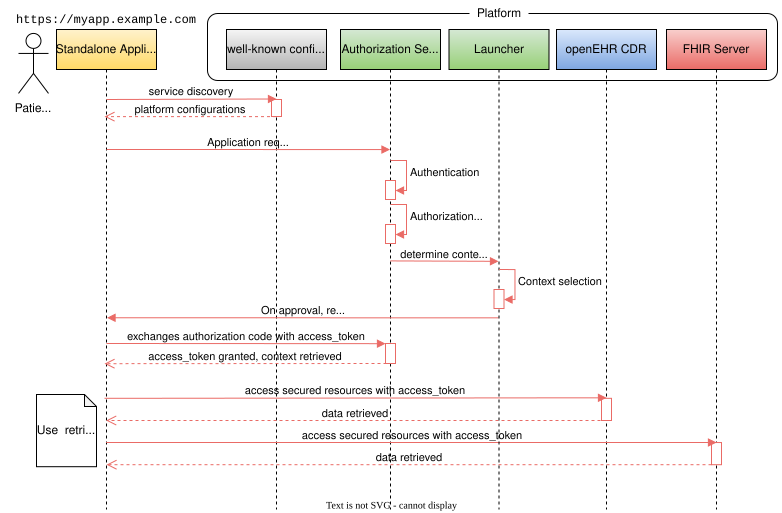
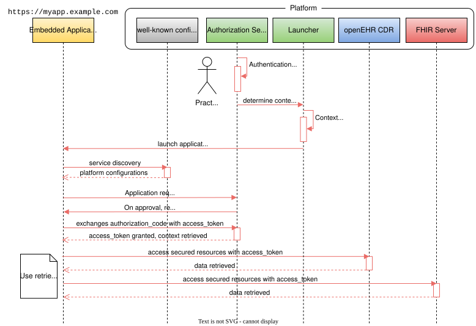

Authorization
Both patient-facing and practitioner-facing applications have specific authorization requirements that extend beyond the capabilities of the core OAuth 2.0 Authorization Framework. Depending on how an application is invoked, SMART Framework defines two launch contexts, enabling apps to obtain contextual access to clinical data based on the user and their session:
-
Standalone Launch: The Application is initiated directly by the end-user, outside the context of a running session on the Platform. For example, the user may visit
https://myapp.example.comand select the Platform instance they want to connect to. The Application then begins the SMART authorization sequence using the selected Platform’s base URL and.well-known/smart-configurationmetadata. -
EHR Launch: The Application is launched from within the Platform’s user interface (typically within an
iframewithin a Portal). The Platform passes theiss(issuer) andlaunchparameters to the Application, such as inhttps://myapp.example.com?launch=123&iss=https://platform.example.com. Theissidentifies the Platform (FHIR server), and thelaunchparameter conveys session-specific information used to retrieve additional context data.
|
To avoid confusion with the openEHR Reference Model’s |
SMART Authorization Flow
The SMART framework builds on the OAuth 2.0 Authorization Code Flow and defines several SMART-specific launch enhancements on how to obtain the authorization code:
-
The Application redirects the user to the Platform’s
authorization_endpoint, including SMART-specific query parameters such asaud,launch,scope,state,redirect_uri, etc. -
The Authorization Server authenticates the user, validates the requested scopes, and (if allowed) issues an authorization
codeto the Application via theredirect_uri. -
The Application exchanges the authorization
codefor anaccess_tokenand optionally anid_tokenandrefresh_tokenby POSTing to the Platform’stoken_endpoint.
Context Selection
In a Standalone Launch, a client Application can request the Platform to assist with context selection, provided that the relevant capabilities are supported by the Platform. Most patient-facing and practitioner-facing applications will require the Platform to supply additional context during the authorization process. This contextual data may include identifiers such as the openEHR EHR ID, FHIR Patient ID, Episode ID, etc. The context is typically valid for the duration of the user session.

The purpose of this context data is to pre-load or configure the Application to operate within a relevant clinical scope. The Platform may determine this context automatically based on the authenticated user, or may prompt the user (e.g., via a selection screen) after the consent page if multiple valid contexts are possible.
To explicitly request openEHR-related launch context, the Application must include the following SMART-defined scopes in the authorization request:
| Scope | Meaning |
|---|---|
|
Indicates that the Application requires patient context at launch (both FHIR |
|
Indicates that the Application requires episode context at launch. (Experimental) |
The Platform returns the resolved context information in the token response, alongside the access_token and optionally an id_token. In addition to the standard SMART App Launch context attributes, the following openEHR-specific parameters may be included in the token response:
| Parameter | Meaning |
|---|---|
|
The unique identifier of the openEHR |
|
The identifier of the selected clinical episode (if applicable). (experimental) |
The Application may use these parameters to tailor the user interface and functionality to the selected clinical context.
|
While this specification defines openEHR-specific launch parameters, standard SMART launch scopes and context attributes remain compatible and may be used in parallel for interoperability purposes. These are referenced from the SMART App Launch Framework, but their use is not normative in this specification. |
Embedded iFrame Launch
Many practitioner-facing applications and, in some cases, patient-facing applications are integrated directly within a web-based front-end (e.g., a clinical portal or patient portal) using a dedicated component.
In an Embedded iFrame Launch, the Platform initiates the application by embedding it in an iFrame and passing key parameters directly in the URL:
-
launch: An opaque identifier or token that encodes relevant launch context (e.g., patient, EHR ID, episode). -
iss: The issuer URL representing the Platform’s base endpoint (which, for compatibility with SMART on FHIR, should also serve as the FHIR base URL).
For example, an application might be launched by: https://myapp.example.com?launch=123&iss=https://platform.example.com.

Once launched, the Application uses the iss value to retrieve the SMART configuration document from iss/.well-known/smart-configuration.
This configuration document provides important endpoints including the authorization_endpoint.
The Application uses this information to initiate the OAuth 2.0 Authorization Code Flow, including the launch parameter in the authorization request.
To support this interaction model, the following SMART-defined scope must be also included in the authorization request:
| Scope | Meaning |
|---|---|
|
Permission to obtain launch context when Application is launched from an EHR (i.e., Embedded iFrame Launch).
Must be accompanied by the |